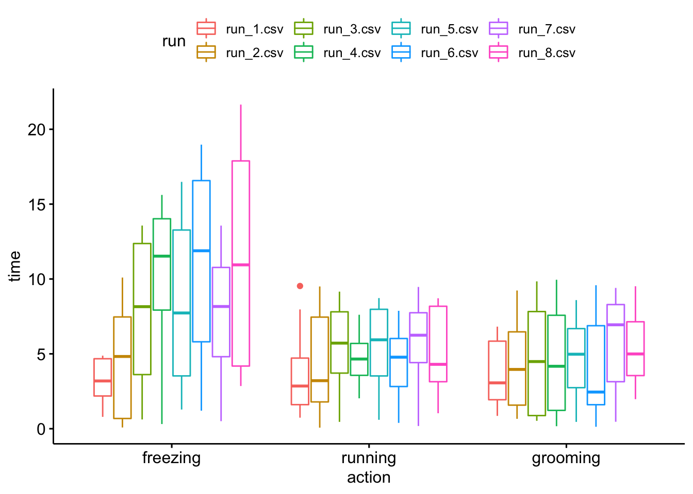

In many cases you need to repeat the same action across multiple objects, for instance loading many files, or computing summary statistics across many vectors of observations. Instead of repeating the same operation manually for every object - which is not only time consuming, but especially prone to mistakes - you can use for loops.
However for can be quite verbose, and especially in case you need to nest them - i.e. running a loop inside a loop - it can be difficult to inspect the code for errors during the analysis and especially in the future.
Base R already provides some functions to avoid the creation of for loops, with the family of apply functions. However sometimes the syntax can be different across functions, and still a bit verbose.
The tidyverse provides functions that help getting rid of for loops for good using the purrr package. Below there is just an example. More details can be found in the iteration chapter of R for Data Science and in the functionals chapter of Advanced R
library(tidyverse)
library(kableExtra)
library(DT)
options(digits=2)Let’s say you collected data in 8 different runs of an experiment. For instance the time, in seconds, spent freezing, running or grooming in 10 participants after a given stimulus in each subsequent run.
For our example we will create some random data. The code below creates 8 dataframes with 10 observations for three distinct variables. It already uses the map function that we are going to explain later, so for now you can just disregard it, and come back later to understand what it does as an excercise.
system("rm *.csv")
1:8 %>% map( function(x) {
tibble(
SUBID = map(1:10, ~ paste0("sub_",.x) ) %>% unlist(),
freezing = runif(10)*10 * log(x+1),
running = runif(10)*10,
grooming = runif(10)*10
) %>%
write_csv(paste0("run_",x,".csv"))
})We obtain 8 csv files with our data.
myfiles <- list.files(pattern = ".csv")
myfiles## [1] "run_1.csv" "run_2.csv" "run_3.csv" "run_4.csv" "run_5.csv" "run_6.csv" "run_7.csv" "run_8.csv"read.csv("run_1.csv")## SUBID freezing running grooming
## 1 sub_1 1.78 7.97 1.03
## 2 sub_2 4.79 9.53 3.50
## 3 sub_3 4.32 1.70 1.91
## 4 sub_4 3.29 0.77 6.82
## 5 sub_5 3.08 2.30 6.06
## 6 sub_6 2.97 4.84 2.02
## 7 sub_7 4.88 3.40 6.17
## 8 sub_8 4.88 0.74 0.86
## 9 sub_9 0.79 4.34 5.23
## 10 sub_10 1.92 1.58 2.63purrr::mapNow you want to load everything in the same dataframe (i.e. table), for instance to carry out a RM-ANOVA. You could use a for loop to load all the files:
allruns = vector(mode = "list", length = 8)
for (run in 1:length(allruns)) {
allruns[[run]] <- read.csv( myfiles[[run]] )
}
# allrunsOr you could use the map function inside the purrr package
allruns <- map(myfiles, read.csv)
# allrunsIn other words you passed to every element of the list myfiles the function read.csv
Note the advantages:
purrr::map2To carry out the RM-ANOVA, you need to combine all the tables into one singe dataframe, but also retain information about the different run.
The idea is the same as before: you have a function that creates a column with the run numba in each run’s data table. This means that you want to provide two lists: (1) the list containing the table of each run and (2) the list of filenames.
alldata <- map2(allruns, myfiles, function(run, file) run %>% mutate(run = file)) %>% bind_rows()or with a more concise syntax:
alldata <- map2_df(allruns, myfiles, ~ .x %>% mutate(run = .y))You might have noticed that here I used a specific flavor of map, that is map_df, which returns a dataframe (or a tibble in the tidyverse language) instead of the default list, so that I can drop the final bind_rows().
purrr::pmapAs you might expect, there is also a function pmap which allows you to pass an arbitrary number of tables. I personally prefer this syntax since it allows me to pipe the list into it:
alldata <- list(allruns, myfiles) %>% pmap_df(~ .x %>% mutate(run = .y))
datatable(alldata, options = list(dom = 'tp'))map is similar to group_by for dataframesFinally, note that the map function - and its variation, such as pmap, is a similar operator for list to the group_by operator inside dataframes.
For instance let’s say that you want to get the mean and standard deviation for every variable in each run:
descriptives <- alldata %>%
group_by(run) %>%
summarise(
across(where(is.numeric), list(mean = mean, sd = sd)),
.groups = "drop"
) %>% ungroup()
descriptives %>%
kbl() %>% kable_styling(bootstrap_options = c("striped", "hover"))| run | freezing_mean | freezing_sd | running_mean | running_sd | grooming_mean | grooming_sd |
|---|---|---|---|---|---|---|
| run_1.csv | 3.3 | 1.4 | 3.7 | 3.0 | 3.6 | 2.3 |
| run_2.csv | 4.5 | 3.8 | 4.5 | 3.5 | 4.2 | 3.0 |
| run_3.csv | 7.9 | 5.1 | 5.4 | 2.9 | 4.6 | 3.7 |
| run_4.csv | 10.4 | 4.9 | 4.7 | 1.8 | 4.7 | 3.8 |
| run_5.csv | 8.3 | 5.7 | 5.4 | 3.0 | 4.8 | 2.8 |
| run_6.csv | 11.3 | 6.3 | 4.4 | 2.4 | 3.9 | 3.4 |
| run_7.csv | 7.7 | 4.6 | 5.7 | 3.2 | 5.8 | 3.3 |
| run_8.csv | 11.3 | 7.4 | 5.2 | 2.8 | 5.4 | 2.7 |
A great tutorial here
# prepare using gather
ready4ANOVA <- alldata %>%
gather(key = "action", value = "time", freezing, running, grooming)
# prepare using pivot_longer
ready4ANOVA <- alldata %>%
pivot_longer(cols = where(is.numeric), names_to = "action", values_to = "time")
library(ggpubr)
ggboxplot(ready4ANOVA, x = "action", y = "time", color = "run")
library(rstatix)
res.aov <- anova_test(
data = ready4ANOVA,
dv = time,
wid = SUBID,
within = c(run,action)
)
get_anova_table(res.aov)## ANOVA Table (type III tests)
##
## Effect DFn DFd F p p<.05 ges
## 1 run 7 63 2.8 1.3e-02 * 0.092
## 2 action 2 18 20.2 2.5e-05 * 0.156
## 3 run:action 14 126 1.8 5.1e-02 0.101